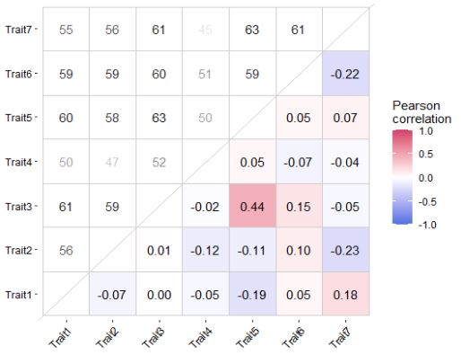

Simple pairwise visualizations for incomplete datasets
This is my first post. It is going to be an easy one.
It often happens that a species × trait matrix (or any data set really) is incomplete because of missing trait information (some species may have some traits, while others don’t). In my experience, this makes difficult to check pairwise correlations using common visualization tools in R. Here, I report an R code to plot pairwise correlation estimates retaining complete observations (with cor(..., use="pairwise.complete.obs")) for each pair in the lower-right panel and reporting the sample size in the upper-left panel. This way, one can always know how many species report trait data information for each pair and check their correlation value.
#Plot correlation matrix with gaps
#1. Accessory functions ####
getsamplesize <- function(vec_a, vec_b) {
nrow(drop_na(data.frame(vec_a,vec_b)))
}
firstup <- function(x) {
substr(x, 1, 1) <- toupper(substr(x, 1, 1))
x
}
get_lower_tri<-function(cormat){
cormat[upper.tri(cormat)] <- NA
return(cormat)
}
get_upper_tri <- function(cormat){
cormat[lower.tri(cormat)]<- NA
return(cormat)
}
#2. load the function
#N.B. this function requires tidyverse, reshape2, and corrr packages
plot.inc.cor <- function(mat, round.label.digit=2, cor.method='pearson', size.label=4){
corm <- cor(mat, method = cor.method, use="pairwise.complete.obs")
pcorm <- cor(mat, method = cor.method, use="pairwise.complete.obs") %>%
get_lower_tri %>%
reshape2::melt()
pcorm$value = ifelse(pcorm$Var1 == pcorm$Var2, NA, pcorm$value)
psams <- corrr::colpair_map(mat, getsamplesize) %>%
as.data.frame %>%
tibble::column_to_rownames('term') %>%
as.matrix %>%
get_upper_tri %>%
reshape2::melt() %>%
setNames(names(pcorm))
pcorm$value = round(pcorm$value, round.label.digit)
# Format the numeric values with two decimal places
pcorm$formatted_value <- sprintf(paste0('%.',round.label.digit,'f'), pcorm$value)
pcorm$formatted_value <- ifelse(pcorm$formatted_value=='NA',NA,pcorm$formatted_value)
p <- ggplot() +
geom_tile(data = pcorm, aes(x=Var1, y=Var2, fill=value), color='grey80')+
geom_text(data = psams, aes(x=Var1, y=Var2, label = value, alpha=log(value)), color = "black", size = size.label) +
geom_text(data = pcorm, aes(x=Var1, y=Var2, label = formatted_value), color = "black", size = size.label) +
scale_fill_gradient2(low = "#4A6FE3", mid = "white", high = "#D33F6A",
midpoint = 0, limit = c(-1,1), space = "Lab",
na.value = 'white',
name=paste0(firstup(cor.method),'\ncorrelation')) +
theme_classic() +
guides(alpha='none')+
theme(axis.text.x = element_text(angle = 45, vjust = 1, hjust = 1, color='black'),
axis.text.y = element_text(color='black'),
axis.title = element_blank(),
axis.line = element_blank(),
panel.background = element_rect(fill = "white",
colour = "white")) +
coord_fixed() +
geom_abline(slope = 1, intercept = 0, color='grey80')
return(p)
}Simulate some data and visualize the output with the plot.inc.cor function:
set.seed(9)
library(tidyverse); library(reshape2); library(corrr)
# Number of rows and columns in the dataframe
num_species <- 100
num_traits <- 7
# Generate random data with NAs
dmatrix <- matrix(runif(num_species * num_traits), nrow = num_species)
# Randomly replace 25% of values with NA
dmatrix[sample(length(dmatrix), length(dmatrix)*0.25)] <- NA
# Convert the matrix to a dataframe
dmatrix <- as.data.frame(dmatrix)
names(dmatrix) = paste0('Trait',1:ncol(dmatrix))
plot.inc.cor(dmatrix, cor.method='pearson', round.label.digit=2, size.label=3)